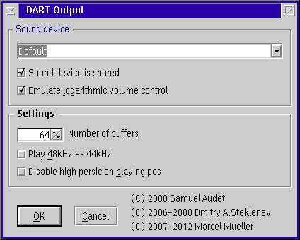

PM123's OS/2 DART audio output plug-in (OS2AUDIO)
Configuration

Sound device
Select the appropriate sound device for output.
- Sound device is shared
- Check this to open the sound device in shared mode. Other
applications may intercept the playback in this case.
This is the only way to operate the sound device in duplex mode.
- Emulate logarithmic volume control
- Compensate for non-natural linear mixer
controls of cheap sound devices. See details.
Settings
- Number of buffers
- Select the number of IO buffers to be used with the sound device.
Increasing the buffer count might avoid sample drops if your system is
not that responsive. But it might also cause high CPU usage on seek
operations.
- Play 48 kHz as 44.1 kHz
- Some sound devices are unable to play 48 kHz files. Checking this
option simply changes the sampling rate to 44.1 kHz. This does not
cause any resamplig. The sound is played about 8% too slow and
with about 8% off pitch.
- Disable high precision playing position
- Some sound drivers dislike too many calls to MCI_STATUS_POSITION.
This is a work around.
You should only select this option if you encounter hangs or crashes
otherwise. It will cause the time display in PM123 to become less
smooth.